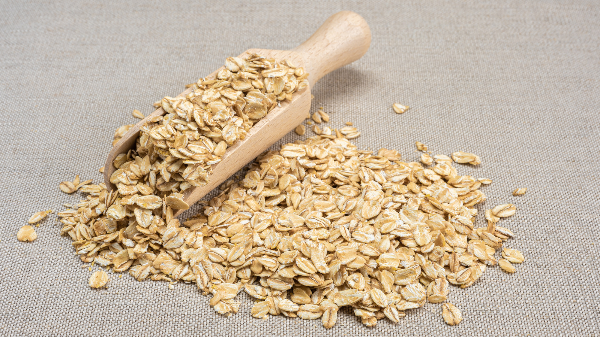

Berry Oats
Fresh and fruity with a protein boost.
- Calories: 375 kcal
- Protein: 29g
- Carbs: 48g
These Berry oats are packed with the natural sweetness of mixed berries blended into creamy overnight oats. A refreshing choice for morning routines or a midday lift — low in calories, rich in antioxidants, and still high in protein.
← Back to Products